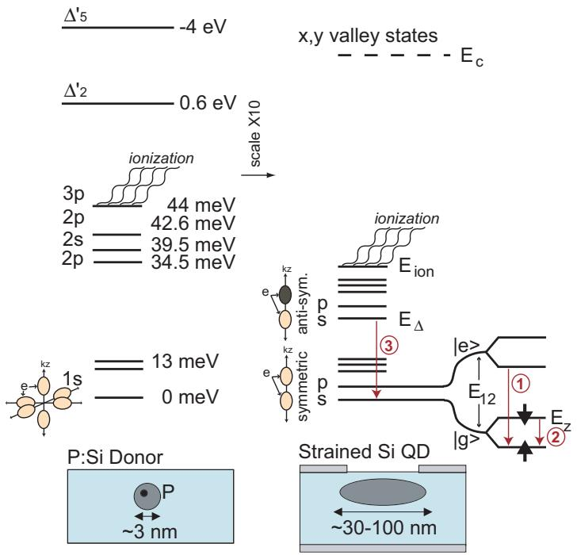
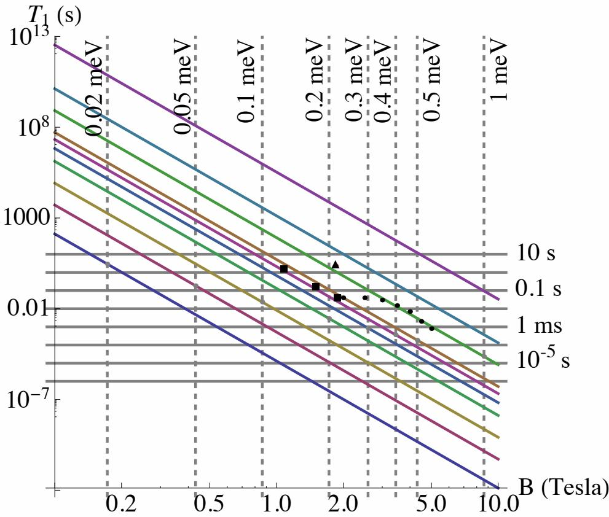
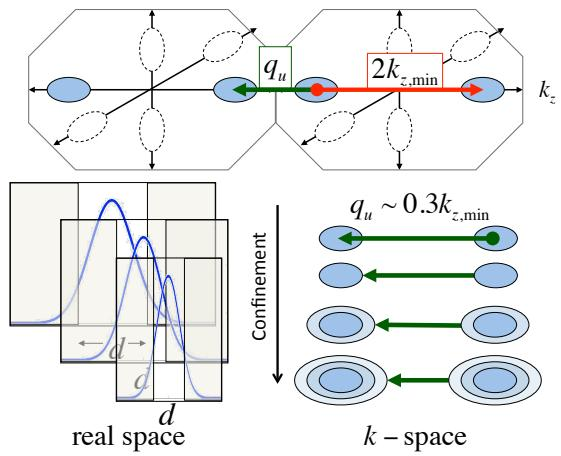
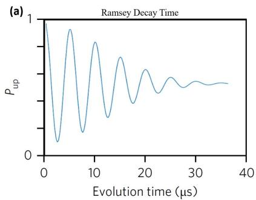
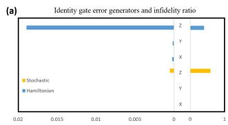
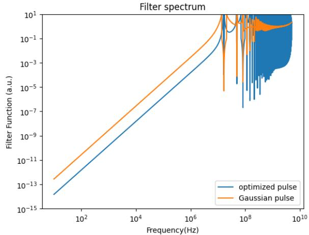

物理图像
半导体量子点中的单自旋量子比特以磁场下两个塞曼能级 、 编码 、。理想情况下，叠加态 在布洛赫球上以拉莫尔频率 自由进动、相位差 稳定增长；自旋–轨道相互作用和超精细相互作用（hyperfine interaction）把电子自旋与环境耦合，使比特状态会向环境”泄露”。这种泄露有两类：
- 能量泄露（）：自旋从激发态 通过自旋–声子或自旋–轨道–声子通道释放一个声子回到基态 ，纵向磁化强度 指数衰减 。
- 相位泄露（）：环境磁场涨落（核自旋 Overhauser 场、栅极电压经磁场梯度调制的有效磁场等）让 在不同次实验间随机偏移，赤道面上的相位 累加为高斯/指数分布，布居数平均值衰减为混态。
Ramsey 序列测得的 把准静态与慢漂移噪声都算在退相干里，是 的下限；Hahn 回波、CPMG-N 等动力学解耦序列逐步把低频噪声”对消”，可读出的 、 依次逼近材料与器件的本征极限。
理论模型
自旋–环境哈密顿量
把比特哈密顿量写为
其中 把三类主要噪声源累加：
- 核自旋 Overhauser 场涨落 ：电子与点内 – 个晶格核自旋通过费米接触超精细耦合 ，平均场 对 GaAs 约 –（相当于百 MHz 量级的拉莫尔频率偏移），涨落部分则随核自旋扩散、动态核极化过程在毫秒到秒尺度上漂移。 把核磁场等效为准静态场，明确写出 （式 2.12 与式 3.10），并把 S–T0、S–T+ 反交叉附近的相干动力学归因于 （即两点核磁场之差，式 2.13）。
- 栅极电压电荷噪声 ：通过自旋–轨道耦合或人工磁场梯度把噪声注入比特频率，。硅体系典型灵敏度 –；锗空穴自旋因强 SOC 可达 – 量级。其微观载体（单体电荷涨落器）在 Si/SiGe 中已可逐个表征并经反馈钉扎——见电荷噪声词条的单体 TLF 表征与反馈稳定两节。
- 杂散磁场梯度：微磁体或邻近电极磁性材料提供的 与电子波函数位置变化耦合进入 ；梯度越强，EDSR 越快但同时也越容易把电场噪声转译为比特频率抖动。
与自旋–声子、自旋–轨道机制
反映”激发态→基态”的能量弛豫。在 Si/SiGe、Si-MOS 中，自旋–晶格耦合以形变势声子为主，硅里还能通过谷激发态泄漏（spin–valley mixing）产生额外通道。 把弛豫速率写为多通道相加：
其中下标 SV、SO 分别表示自旋–谷混合与自旋–轨道混合， 表示 Johnson 噪声、ph 表示声子、const 表示与外磁场无关的常值通道（式 2.7）。当 与谷能级劈裂 重合时，自旋–谷混合打开一条特别强的弛豫通道， 会从 ms 量级骤降到 μs 量级——这是硅自旋比特独有的失效模式，磁输运上表现为 处 的”V 形”谷。
在 GaAs 双量子点的电荷比特中， 主要受电子–声子耦合与电荷态间的隧穿耦合控制，典型值在纳秒量级。
硅点 的声子弛豫理论：幂律、各向异性与谷弛豫
Tahan 与 Joynt 对单电子硅量子点的声子弛豫做了系统计算（形变势、多极展开），把自旋、轨道、谷三类激发的弛豫放进同一框架。能量弛豫在 ~100 mK 由自发单声子发射主导（光子发射因末态密度低得多而可忽略），能级图像如下：轨道弛豫（第一激发轨道→基态）、自旋弛豫（电子比特 ）与谷弛豫（激发谷→基态谷）各有独立的通道与标度。

硅施主（左）与硅量子点（右）的低能级与三类弛豫过程示意：圆圈数字 1/2/3 分别为轨道弛豫、自旋弛豫（电子比特 ）与谷弛豫；量子点中低能级来自不同轨道波函数叠加 ±z 两谷，谷劈裂介于对称/反对称谷组合之间、可为 0 至 meV——谷激发可能落进 Zeeman 与轨道能级的窗口内。图源：Tahan & Joynt (2013), Fig. 2。
自旋弛豫的三种机制与磁场幂律。对体相硅施主，两条经典机制是”谷重布居”（声子改变六个谷的布居权重）与”单谷机制”（Roth 型带间耦合）。在应变硅量子阱中只有 两谷被占据：SOC 只把对称谷基态与某一个双重态分量混合，谷重布居机制的矩阵元在量子点极限下消失；单谷机制保留，其 ，且磁场沿晶体轴 或 时严格为零——这是它的特征指纹，但绝对量很小。量子点特有的是界面 SOC（结构反转不对称 + 界面对称破缺产生的 Rashba 与 Dresselhaus 型项；硅无体相反转不对称，二者完全来自界面，比例因样品而异）：
其中 、 是磁场相对 的极角与方位角。 幂律是点特异 SOC 的标志，与 GaAs 点（压电声子主导）和硅施主（体相 SOC）的 形成鲜明对照；主项 沿 轴不消失（又与 Roth 型相反），要单独分离 与 需测更小的 项——椭圆量子点会放大它。– 图还给出理论–实验对比的有效边界：只在简并点以下比较才有效——Zeeman 能扫过第一激发轨道能级（该尺寸的点约 0.3–0.4 meV）时出现自旋”热点”， 骤降。

理想圆量子点的自旋弛豫时间 T₁ 随磁场的理论曲线（Eq. 12，√(α²+β²)=4 μeV·nm、B∥[110]）：对角线自下而上对应轨道能隙 Δ=0.02→8 meV（点越小越大）；竖线与对角线的交点是简并点（热点位置），理论只在简并点以下与实验可比。数据点为已发表的 SiGe 点（HRL、Wisconsin）与 SiO₂ 点（UCLA）实验值。图源：Tahan & Joynt (2013), Fig. 5。
轨道与谷弛豫：多极展开的必要性。形变势声子弛豫速率的严格计算须保留全部多极贡献——电偶极近似在轨道弛豫（第一激发轨道→基态）与谷弛豫上都会明显偏离精确结果（小能隙/大结构时尤甚）。谷弛豫由横/纵声子共同贡献：理想界面下谷弛豫速率随谷劈裂 变化，并在波函数 向延展随电场变化时被增强—— 方向限域越紧，动量空间波函数越宽，谷间声子散射越快。对典型硅点 的区间，理论给出可直接对比的谷弛豫时间曲线（谷劈裂词条的谷激发寿命问题由此获得定量参照）。

理想界面量子点激发谷态的总弛豫时间（横+纵声子）随谷劈裂 Δ_v 的变化：实线为含全部多极的精确结果、虚线为电偶极近似——偶极近似在谷弛豫上系统性偏差明显；典型硅点 Δ_v<1 meV 区间有直接实验意义。图源：Tahan & Joynt (2013), Fig. 10。
：随机相位累积
考虑比特在 时间内的自由演化。设失谐 是平稳随机过程，相对方差
其中 是 的功率谱密度（power spectral density，PSD）， 是序列对应的滤波函数。对纯 Ramsey 序列 （），滤波函数 在 近似为常数，对 类低频噪声权重最大，Ramsey 衰减常呈高斯或拉伸指数形式
对应白噪声、 对应准静态 噪声、 是混合噪声谱的常见取值 §2.4.2）。
Hahn 回波在中点插入 脉冲把 在前后两段反号，使低频段 抑制低频噪声；CPMG- 把脉冲加密到 个，滤波窗口推至 ， 可较 再延长一个量级以上。完整推导与噪声谱重建见动力学解耦词条。把比特反过来当”噪声谱仪”用（固定脉冲间隔提取 、换算 ）可以把退相干分解为低频磁噪声、中频 1/f 电荷噪声与白噪声底并定位仪器峰——SiMOS 实例见该词条”实验落地”一节。
退相干时间层级与品质因子
实际体系里通常要区分三个层级：
- ：受控驱动期间相干性，由微波功率、谱扩散、加热决定；
- ：自由演化期间、不带重聚焦的退相位，由全部低频噪声决定；
- /：插入 脉冲后逐步压低低频噪声，把可观测相干时间向本征极限推进。
在工程上常用品质因子 描述”相干时间内能完成多少个 操作”；对 Ramsey/Hahn 序列也有类似的 与 §3.3.4）。
非马尔可夫 1/f 噪声的随机模型与 GST 误差分解（Chiu 2025）
滤波函数框架默认噪声平稳且常用准静态或经典系综近似；Si/SiGe 自旋比特的 1/f 电荷噪声却是典型的非马尔可夫过程（方差随时间发散），而 RB/GST 等表征协议的理论基础又是马尔可夫近似——这个错位常让从退相干时间反推的”噪声强度”失真。Chiu 等人给出闭环的建模-表征-优化流程：
微观到谱：从EDSR的自旋-位置耦合出发构造自旋-声子型噪声通道（电荷噪声经微波磁体梯度进入自旋频率）， bath 关联函数用多指数模式叠加——每个模式以速率 指数衰减、幅度权重取
叠加后即得 1/f 频谱。主方程虽是时间局域的，但耗散核随时间变化，仍属非马尔可夫；借助扩展辅助刘维尔空间可把记忆效应并入高效求解与后续最优控制。

随机噪声模型对退相干实验的复现：含非相干噪声的数值模拟（Ramsey/CPMG）与真实器件参数下的实验行为一致，优于纯相干（随机初相）噪声模型——为 GST 分析提供可信的噪声底。图源：Chiu et al. (2025), Fig. 1。
GST 误差生成元的相干/非相干分解：把含噪门的时间演化通道取矩阵对数得”误差生成元”，随机（非相干）部分形如 。在旋转框架中比特主要经 z 向随机误差生成元失去相干。关键结论：此前工作为拟合实验退相干时间而调大相干噪声强度，会低估门保真度；引入本模型的非相干通道后，误差生成元强度与实验一致、平均门保真度更贴近实测值。

GST 误差生成元与纠缠不保真度比值：非马尔可夫 1/f 模型下的误差生成元分解（相干 vs 非相干）——随机误差生成元主导，避免了用过大相干噪声强度拟合退相干时间所导致的门保真度低估。图源：Chiu et al. (2025), Fig. 2。
Krotov 优化脉冲：在非马尔可夫噪声模型下用 Krotov 最优控制合成脉冲，可大幅降低 1/f 电荷噪声的误差贡献；且经 CPMG 滤波函数分析，针对非相干噪声优化的脉冲对相干噪声同样比常规高斯脉冲更鲁棒——“为一类噪声优化、对多类噪声受益”。

优化脉冲的滤波谱：从控制矩阵 [R(t)] 转换的归一化滤波谱展示优化脉冲在多大频率范围上抑制电荷噪声——相比常规脉冲显著压低非马尔可夫误差贡献。图源：Chiu et al. (2025), Fig. 4。
噪声通道与材料体系
超精细噪声：GaAs 与硅、锗的根本差异
GaAs 中每个量子点电子与 个 // 核自旋接触耦合，Overhauser 场 –、典型涨落 –，对应 ns §3.5）。Ge/SiGe 异质结中 丰度约 7.7%，超精细噪声比 GaAs 弱约一个量级， 可达数十至上百 ns 量级。自然硅中 丰度 4.7%， 典型为 0.5–1 μs；同位素纯化到 富集度 后， 可突破 100 μs、 可达 ms 量级。
电荷噪声与栅极灵敏度
栅极电压噪声通过两种通道注入自旋比特：
- 直接通过自旋–轨道耦合：典型于 Ge/SiGe 空穴自旋；栅极灵敏度可高至 ，所以同样的 比硅电子自旋更”致命”。硅电子自旋的劈裂噪声则多经磁场梯度通道（界面缺陷运动拖动波函数、经 转化为 Zeeman 涨落）注入——其微观模型与”自旋劈裂噪声 ↔ 轨道能量噪声关联”的缺陷诊断预言见电荷噪声的界面缺陷微观模型一节。
- 通过人工磁场梯度：典型于 EDSR 体系；梯度越大 EDSR 越快，但电场到自旋频率的耦合也越大。
无论哪种通道， 都可以写成对噪声 PSD 的积分。设栅极噪声 ，则
；这意味着提高 既要降噪（材料、电极工艺）也要降灵敏度（优化工作点）。
杂散磁场与微磁体
微磁体或磁性电极漏磁在量子点处产生 ，一方面通过梯度增强 EDSR，另一方面也会随样品移动把 暴露在低频磁场噪声下。设计时常在”驱动强”与”相干好”之间折中：横向梯度给驱动、纵向梯度给寻址（错开比特频率），但两者同时增大也意味着把更多电荷、磁场噪声注入自旋通道。
参数与量级
| 体系 | 比特类型 | 备注 / 来源 | |||||
|---|---|---|---|---|---|---|---|
| GaAs 双量子点电荷比特 | 电荷比特 | — | （拟合 ） | — | — | PDF p. 47–51 | |
| GaAs 三电子区 LZS 干涉 | S–T 类 | — | — | — | — | 高斯衰减余弦拟合 | |
| Ge 棚顶纳米线空穴自旋 | 空穴自旋 | — | — | — | 拉伸指数拟合 | ||
| 平面锗双量子点空穴自旋（章节 5.3） | 空穴自旋 | — | （） | — | PDF p. 98 | ||
| 平面锗双量子点空穴自旋（章节 2.6.1） | 空穴自旋 | — | — | 优质器件， | |||
| 自然 Si/SiGe 自旋比特 Q1 | 单自旋 | — | （Q2，） | PDF pp. 44–47 | |||
| 自然 Si/SiGe 自旋比特 Q2 | 单自旋 | — | |||||
| Si-MOS 单自旋 | 单自旋 | — | PDF p. 70 | ||||
| 翻转模式 Si 单自旋（零失谐） | 单自旋 | — | — | — | — | PDF pp. 89–91 | |
| GaAs 单自旋（早年 EDSR 文献） | 单自旋 | — | （echo 后） | （DD 后） | — | §1.4.4； 引 Veldhorst 等 | |
| 同位素纯化 单自旋 | 单自旋 | — | — | — | PDF p. 28 引 Veldhorst 等 |
补充几个跨体系的常用经验值：
- 栅极电压灵敏度 ：硅电子 –，锗空穴 –；电荷噪声 PSD –@1 Hz 直接决定 上限。
- 弛豫速率的温度依赖：硅中 在低温下主要由声子与 Johnson 通道决定，温度升高时声子贡献迅速变大；GaAs 中 主要受电–声子耦合控制。
- CPMG 阶数：N 从 25、75 提升到 230 时， 近似线性增长，对应低频噪声投影随 N 系统性下降。
- 自旋–电荷混合：在翻转模式单自旋比特里， 会被人为的”翻转”通道压制；这一通道让 Rabi 频率提高一个量级，但代价是电荷噪声灵敏度同步上升。
- 硅点自旋弛豫幂律：界面 SOC （主项 ， 不消失）；体相单谷机制 （沿 [001]/[011] 严格为零）；GaAs 点与硅施主均 （不同原因）。Tahan 2013
- 自旋热点位置：Zeeman 能 = 第一激发轨道能隙（0.3–0.4 meV 量级的点），理论–实验对比只在简并点以下有效。Tahan 2013
- 谷弛豫：多极展开必要（电偶极近似系统偏差）； 限域越紧谷弛豫越快（动量展宽）；典型 meV 区间有理论曲线。Tahan 2013
实验特征与测量
的脉冲测量
施加 脉冲把比特制备到激发态 ，等待 后再施加 脉冲把残存布居转回基态并测量，扫描 得到 。对 GaAs 电荷比特， 通过斩波–锁相方法在双量子点电荷比特上拟合出 ；对 Si/SiGe 单自旋， 用 Elzerman 单发读出直接拟合， 在 100 ms 量级。硅中 远大于读出时间，因此对读出保真度的影响可忽略；但在 GaAs 电荷比特中 与操作时间同量级，必须考虑。
的 Ramsey 测量
标准 Ramsey 序列：––，扫描 得到相位振荡包络 ；失谐 通常取 5–20 MHz，便于拟合振荡频率。文献给出翻转模式单自旋比特 与 两点的 ；另一组中 Q1/Q2 分别为 ，包络为高斯衰减；另有锗空穴实验测得 （20 MHz 失谐）。
与
在 Ramsey 序列中点插入一个 脉冲即得 Hahn 回波 ––––，包络拟合公式 ， 反映噪声谱形状。自然 Si/SiGe Q1/Q2 在 下给出 （约 倍 ），Si-MOS 实测 （约 96 倍 ）。把 个 脉冲等距插入得到 CPMG-， 在锗空穴上 给出 （约 50 倍 ）。
Rabi 振荡与
驱动期间改变脉冲时长 ，扫出 ； 同时反映驱动期间的相干性与微波加热。 在 Q2 上 时 、，； 翻转模式样品 、。
噪声谱重建
把不同序列（Ramsey、Hahn、CPMG、UDD）测得的 与已知滤波函数联立，可反推 。动力学解耦序列扫描实际上给出”在频率 处累积了多少相位方差”的快照；拟合 由 关系给出 PSD 斜率 §6.5.3： 通过 55 小时 Ramsey + CPMG 联立拟合，得到锗空穴自旋体系的噪声 PSD 为 ，覆盖 – 频段。
测量注意
- 微波加热会随脉冲数累积，CPMG 阶数过高时 不再单调上升甚至回落。
- 双脉冲相位连续性：两段 之间若相位不连续，会引入额外的虚拟 旋转；使用 AWG 时必须把等待时间内的相位累加补偿进第一段脉冲。
- 拟合模型选择：纯指数、高斯、拉伸指数分别对应白噪声、纯 噪声与混合噪声谱；模型错误会让拟合参数偏离真实 。
- 谷能级混淆：硅中 附近 骤降但 未必同向响应，需分别测量 与 以诊断自旋–谷混合通道。
与其他概念的关系
- Ramsey 干涉是 的标准测量协议；它对低频 噪声最敏感，是 的”下限”。
- Rabi 振荡的衰减 与 Ramsey、Hahn、CPMG 一起构成完整的相干图景：分别反映驱动期间、自由演化期间、聚焦低频噪声后的相干性。
- 动力学解耦通过 脉冲”对消”而非”消除”低频噪声，是把 推向 本征值的主要工程手段；它同时给出测量噪声谱的工具（DD noise spectroscopy）。
- 电荷噪声与界面缺陷是退相干的两大来源；材料工艺、同位素纯化、栅极介电优化与 DD 共同组成延长 的多重防线——Si/SiGe 的噪声谱测量显示噪声幅值随栅氧厚度与温度上升（50 mK–1 K 近似线性），升温运行或加厚介质层都会付出噪声代价；350–750 mK 系统扫描实测 温和下降（17–32%），见高温自旋比特运行。
- EDSR与微磁体加快 Rabi 频率的同时把电荷、磁场噪声耦合进比特频率，是”驱动强”与”相干好”难以兼得的根源。
- 单态–三重态量子比特以交换相互作用 为 轴， 主要由电荷噪声决定；它的回波逻辑（DCZ）与自旋比特完全平行。
- 空穴自旋量子比特因强自旋–轨道耦合使 较短（数十至上百 ns），但 可突破 ms 量级；DD 在该体系同时是最重要的延长手段和噪声谱诊断工具。
- cQED侧利用腔介导耦合与色散读出时，腔频 噪声同样会让自旋–光子相位累积；其形式与自旋比特本身的退相干可统一处理。
参考文献
- Tahan, C., Joynt, R. Relaxation of excited spin, orbital, and valley qubit states in single electron silicon quantum dots. Physical Review B 89, 075302 (2014). DOI: 10.1103/physrevb.89.075302；arXiv:1301.0260（QAtlas 缓存：1301.0260）。
- Chiu, W.-e., Huang, C.-H., Wu, Y.-H., Goan, H.-S. Effect of Stochastic Charge Noise in Si/SiGe Quantum-Dot Spin Qubits (2025). arXiv:2510.22189（QAtlas 缓存：2510.22189）。
- 自旋退相干机制（核自旋、电荷噪声、自旋轨道）的系统论述：Hanson et al., RMP 79, 1217 (2007)、Burkard et al., RMP 95, 025003 (2023)。
完整文献库（含各篇站内全文页）见 参考文献库。